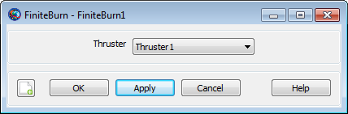

FiniteBurn — A finite burn
The FiniteBurn resource is used when continuous propulsion is desired. Impulsive burns happen instantaneously through the use of the Maneuver command, while finite burns occur continuously starting at the BeginFiniteBurn command and lasting until the EndFiniteBurn command is reached in the mission sequence. In order to apply a non-zero Finite Burn, there must be a Propagate command between the BeginFiniteBurn and EndFiniteBurn commands.
See Also: ChemicalTank, ChemicalThruster, Spacecraft, BeginFiniteBurn, EndFiniteBurn
| Field | Description | ||||||||||||
|---|---|---|---|---|---|---|---|---|---|---|---|---|---|
| Thrusters | The Thruster field allows the
selection of which Thruster, from a list of
previously created thrusters, to use when applying a finite burn.
Currently, using the GUI, you can only select one
Thruster to attach to a
FiniteBurn resource. Using the scripting
interface, you may attach multiple thrusters to a
FiniteBurn resource. Using the scripting
interface, you may attach multiple thrusters to a
FiniteBurn resource. In a script command, an
empty list, e.g.,
| ||||||||||||
| VectorFormat | Deprecated. Allows you to define the format of the
finite burn thrust direction. This field has no affect. The finite
burn thrust direction, as specified in the
Thruster resource, is always given in
|
The FiniteBurn dialog box allows you to specify which thruster to use for the finite burn. The layout of the FiniteBurn dialog box is shown below.
|  |
To perform a finite burn, the FiniteBurn resource itself and a number of related resources and commands must be properly configured. You must associate a specific ChemicalThruster hardware resource with a created FiniteBurn. You must associate a specific ChemicalTank hardware resource with the chosen ChemicalThruster. Finally, you must attach both the chosen Thrusters and Tanks to the desired Spacecraft. See the example below for additional details.
| Field | Description |
|---|---|
| Spacecraft resource | Must be created in order to apply any burn. |
| Thruster resource | As discussed in the Remarks, every FiniteBurn resource must be associated with at least one ChemicalThruster or ElectricThruster. Any thruster created in the resource tree can be incorporated into a FiniteBurn but thruster types cannot be mixed. |
| ChemicalTank resource | To perform a finite burn, a Tank must be attached to the Spacecraft. (A ChemicalTank is needed to provide pressure and temperature data used when modeling the thrust and specific impulse. A Tank is also needed if you want to model mass depletion.) |
| BeginFiniteBurn and EndFiniteBurn command | After a FiniteBurn is created, to apply it in the mission sequence, a BeginFiniteBurn and EndFiniteBurn command must be appended to the mission tree. |
| Propagate command | In order to apply a non-zero finite burn, there must be a Propagate command between the BeginFiniteBurn and EndFiniteBurn commands. |
Configure a chemical finite burn. Create a default Spacecraft and ChemicalTank Resource; Create a default ChemicalThruster that allows for fuel depletion from the default ChemicalTank; Attach ChemicalTank and ChemicalThruster to the Spacecraft; Create default ForceModel and Propagator; Create a Finite Burn that uses the default thruster and apply a 30 minute finite burn to the spacecraft.
% Create a default Spacecraft and ChemicalTank Resource
Create Spacecraft DefaultSC
Create ChemicalTank FuelTank1
% Create a default ChemicalThruster. Allow for fuel depletion from
% the default ChemicalTank.
Create ChemicalThruster Thruster1
Thruster1.DecrementMass = true
Thruster1.Tank = {FuelTank1}
% Attach ChemicalTank and ChemicalThruster to the spacecraft
DefaultSC.Thrusters = {Thruster1}
DefaultSC.Tanks = {FuelTank1}
% Create default ForceModel and Propagator
Create ForceModel DefaultProp_ForceModel
Create Propagator DefaultProp
DefaultProp.FM = DefaultProp_ForceModel
% Create a Finite Burn that uses the default thruster
Create FiniteBurn FiniteBurn1
FiniteBurn1.Thrusters = {Thruster1}
BeginMissionSequence
% Implement 30 minute finite burn
BeginFiniteBurn FiniteBurn1(DefaultSC)
Propagate DefaultProp(DefaultSC) {DefaultSC.ElapsedSecs = 1800}
EndFiniteBurn FiniteBurn1(DefaultSC)